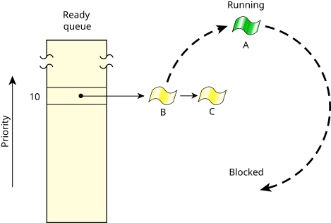

To meet the needs of various applications, the QNX OS provides these scheduling algorithms:
Each thread in the system may run using any method. The methods are effective on a per-thread basis, not on a global basis for all threads and processes on a node.
Remember that the FIFO and round-robin scheduling policies
apply only when two or more threads that share the same
priority are READY (i.e., the threads are directly
competing with each other).
The sporadic method, however, employs a
budget
for a thread's execution.
In all cases, if a higher-priority thread becomes READY, it
immediately preempts all lower-priority threads.
In the following diagram, three threads of equal priority are READY. If Thread A blocks, Thread B will run.

Although a thread inherits its scheduling policy from its parent process, the thread can request to change the algorithm applied by the kernel.